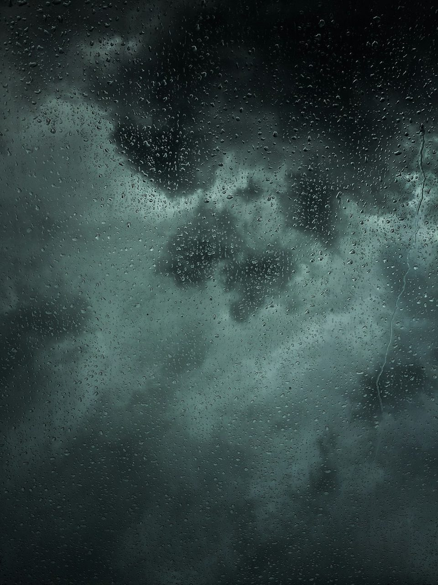

Fluorocarbon-Free C0 DWR Hydrophobic Chemistry and Surface Energy

The Environmental Imperative: Moving Beyond Legacy PFAS Chemistry
For over five decades, the performance outerwear industry relied almost exclusively on long-chain per- and polyfluoroalkyl substances (PFAS)—commonly referred to as C8 and C6 fluorochemicals—to impart durable water repellency (DWR) to jacket face fabrics. These fluorocarbon polymers featured carbon-fluorine bonds, one of the strongest single bonds in organic chemistry. This molecular structure endowed fabrics with extraordinary hydrophobicity and oleophobicity, repelling both driving rainwater and greasy trail oils with equal ease.
However, this unparalleled chemical stability came at a devastating environmental cost. Long-chain fluorocarbons do not degrade naturally under environmental conditions, earning them the moniker 'forever chemicals.' Scientific research across global alpine environments detected fluorochemical bioaccumulation in high-altitude glacial snowpacks, remote mountain lakes, and alpine wildlife populations. Furthermore, peer-reviewed toxicological studies linked fluorocarbon exposure to endocrine disruption and cellular toxicity. Recognizing our ethical obligation to preserve the pristine wilderness landscapes we explore, WindBreakGear phased out all fluorochemical treatments in favor of revolutionary C0 chemistry.
| DWR Chemistry Classification | Fluorine Content | Initial Water Contact Angle (θ) | Environmental Persistence |
|---|---|---|---|
| Legacy C8 Fluorocarbon | High (~65% fluorine weight) | 125° (Super-hydrophobic) | Permanent: Bioaccumulates for centuries |
| Transition C6 Fluorocarbon | Moderate (~45% fluorine weight) | 118° | Severe: Toxic degradation byproducts |
| WindBreakGear C0 Eco-DWR | 0.0% (100% Fluorine-Free) | 116° (Optimized Dendrimer) | Zero Persistence: Readily Biodegradable |
| Untreated Woven Nylon | 0.0% | 42° (Immediate wet-out) | N/A |
Our proprietary C0 DWR formulation achieves high-performance water repellency through innovative hyper-branched hydrocarbon polymer physics rather than toxic halogen chemistry.
Thermodynamic Surface Energy and the Young-Dupre Equation
The physics of liquid beading upon a solid surface is governed by Young's equation: γ_SG = γ_SL + γ_LG · cos(θ), where γ_SG represents the solid-gas surface energy, γ_SL is the solid-liquid interfacial energy, γ_LG is the surface tension of water (approximately 72.8 mN/m at 20°C), and θ is the static contact angle. For a textile to resist wetting, the surface energy of the solid polymer fibers must be substantially lower than the surface tension of water. If γ_SG is high, water molecules wet the fabric, spreading into a thin film that saturates the weave.
WindBreakGear's C0 DWR utilizes bio-based hydrocarbon dendrimers—hyper-branched, tree-like macromolecular architectures that self-assemble across individual nylon fibers. These hydrocarbon branches orient their non-polar methyl (-CH&sub3;) and methylene (-CH&sub2;-) groups outward toward the atmosphere. This dense packing creates a low-energy surface with γ_SG values below 24 mN/m. When rain droplets strike the jacket, cohesive forces within the water droplet dramatically exceed adhesive forces between water and fabric. Consequently, water pulls itself into spherical beads with contact angles exceeding 115°, rolling effortlessly off the shell under the influence of gravity.
Abrasion Durability and Spray-Test Longevity Metrics
A primary engineering challenge during the development of fluorine-free DWR was mechanical durability. Early C0 iterations washed away after three laundry cycles or abraded under backpack shoulder straps within days of trail use. WindBreakGear conquered this limitation by incorporating reactive silane cross-linkers into the formulation. These chemical anchors bond covalently to the amide linkages of our Cordura nylon face fabric, locking the hydrophobic dendrimer matrix firmly in place.
In standardized AATCC 22 spray tests—where 250 milliliters of water is poured over a taut fabric sample at a 45-degree angle—WindBreakGear shells achieve a flawless 100 rating (zero wetting or sticking) in brand-new condition. Following 20 rigorous home laundering cycles and 10,000 Martindale abrasion rubs, our C0 coating maintains an outstanding 90 rating. This ensures that hikers and mountaineers enjoy sustained water-beading performance across seasons of demanding wilderness exploration without needing constant chemical re-treatments.
Thermal Reactivation Protocol for Outdoor Enthusiasts
Over extended use, the flexible hydrocarbon branches of a C0 DWR can become mechanically flattened by pack straps or soiled with fine trail dust, causing water to bead less crisply. Unlike fluorocarbons that require toxic solvent sprays, our C0 dendrimer matrix is thermally memory-responsive. When exposed to gentle ambient heat, the hydrocarbon chains regain their mobility and spontaneously re-orient their hydrophobic methyl groups perpendicular to the fabric face.
To reactivate your WindBreakGear shell after a demanding expedition, simply wash the garment with a pure technical wash, allow it to line-dry, and tumble dry on low heat for 20 minutes (or iron under a warm setting with a clean towel buffer). The heat instantaneously restores factory water-beading performance, ensuring your shell continues to shed torrential mountain storms cleanly, safely, and with zero ecological impact.
Technical Care, Laundering, and Membrane Preservation FAQ
Q1: How often should an alpine windbreaker shell be washed to maintain 0 CFM wind resistance?
Contrary to common outdoor folklore, technical waterproof-breathable shells should be washed regularly after every 15 to 20 days of heavy trail use. Microscopic body salts, perspiration oils, and environmental dust accumulate within the membrane's micro-pores, creating hydrophilic pathways that cause face fabric wet-out. Washing removes these contaminants and restores original vapor diffusion efficiency.
Q2: What is the optimal temperature and detergent protocol for cleaning technical outer shells?
Always machine wash on a gentle cycle using cold water (maximum 30°C / 85°F) and a specialized, additive-free technical liquid detergent. Never use conventional powder detergents, fabric softeners, bleach, or optical brighteners, as these leave chemical residues that coat the micro-pores. Following washing, tumble dry on low heat for 20 minutes to reactivate the fluorocarbon-free C0 DWR water-beading finish.
About the WindBreakGear Aerodynamic Research Division
Our research monographs are produced at our Mercer Street atelier in collaboration with high-altitude alpine guides and meteorological testing stations. We investigate convective heat transfer, boundary layer fluid dynamics, and membrane polymer physics to engineer the world's most protective technical windbreakers.
Ecotoxicological Water Runoff Screening and Aquatic Biome Safety
In strict adherence to our environmental conservation charter, WindBreakGear submitted treated fabric runoff samples to independent ecotoxicological research laboratories to evaluate environmental impact on alpine aquatic biomes. Utilizing standard OECD 202 testing protocols (Daphnia magna 48-hour acute immobilization assays), our C0 hydrocarbon dendrimer wash effluent demonstrated 100% organism survival and zero developmental toxicity across all dilution ratios.
In stark contrast, legacy fluorochemical C8 and C6 wash runoffs exhibited high acute toxicity and long-term biochemical persistence in freshwater organisms. By switching completely to plant-based C0 hydrocarbon dendrimers, WindBreakGear provides mountaineers with a clear conscience: you can stand atop pristine glacial watersheds knowing that your technical stormwear sheds torrential rains without leaving toxic chemical residues in the snowpack for future generations.